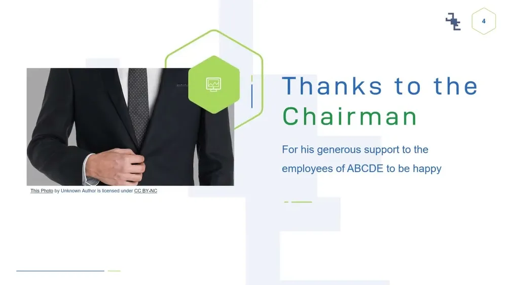
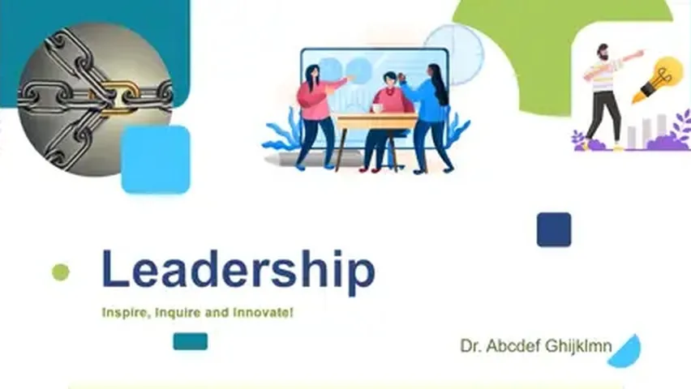
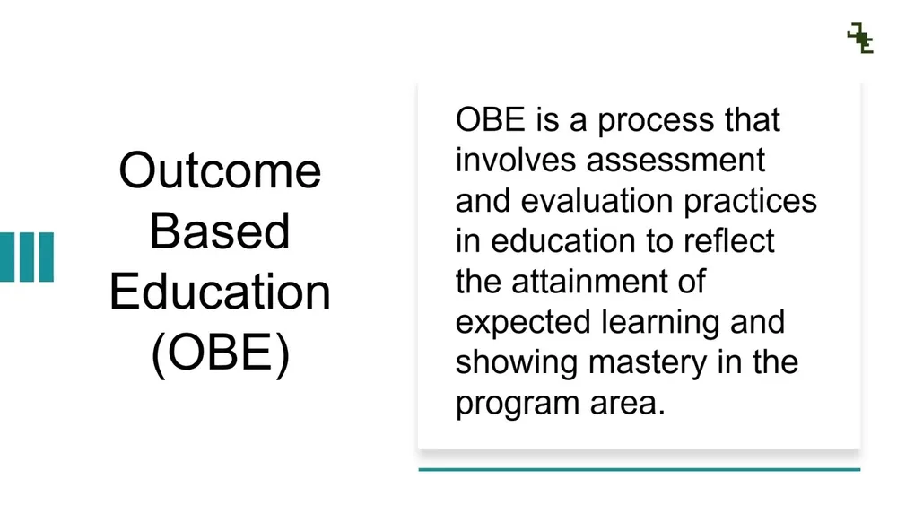
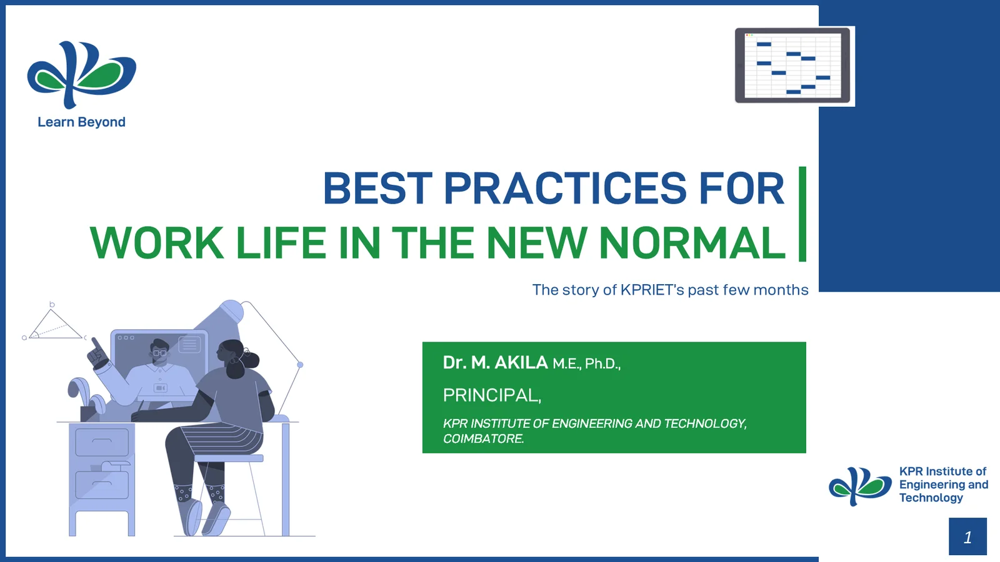

Entrepreneurship Development & Startup
A full course built around a startup scenario, Sensovate Technologies, that learners follow from idea to venture across every unit.
Engineer and university educator since 2019. I design interactive courseware, assessments, and presentation decks for universities, training teams, and technical founders, and I work with faculty the way faculty actually work, because I am one.
Two core services. Seven years in the classroom keeps the pedagogy practical; an engineering background keeps the content accurate.
Interactive courseware, e-learning modules, assessments, and question banks for technical subjects. I structure content around clear learning outcomes, scenario-based practice, and feedback learners actually use.
Keynotes, leadership and institutional decks, pitch decks, and slide redesigns. Strong hierarchy, intentional color, and pacing that keeps a room with you.
Diagrams and infographics that make engineering workflows readable, plus campaign visuals, event posters, and social collateral.
Parametric CAD, design for additive manufacturing, and FDM printing for functional prototypes, teaching aids, and custom pieces.
Courseware and learning resources for engineering and entrepreneurship.
A full course built around a startup scenario, Sensovate Technologies, that learners follow from idea to venture across every unit.
Interactive web module on UAV history, classification, and subsystems, with gamified assessments and learner progress tracking.
Course portal with a homepage and five unit portals, built from the official course documents with embedded video lessons.
Derivation-stripped revision series and a benchmark problem bank for the new GATE Robotics & Automation paper.
Leadership and education decks. Click a card to watch the deck.

End-of-year leadership keynote designed for an institutional address to 300+ faculty and staff.

A keynote on leadership principles, institutional culture, and strategic management.

A deck explaining an outcome-based education framework through visual process layouts.
A free tool I made and maintain.
The decisions behind the build: who the learners were, what they needed to do, and why the design looks the way it does.
Understand the material properly before designing anything. I ask for the schematic, the data, the paper.
Respecting an audience means not wasting its attention: one idea per slide, plain language, generous space.
Make it easy without dumbing it down. Real terminology gets explained, not removed.
Drag the handle to compare the original deck with my redesign of an institutional "Best Practices" keynote.

The same five steps whether it's a full course or a single keynote.
Interview the subject expert, read the source material, and find out who the learners or the audience really are.
Write what learners should be able to do afterward, in terms that can be checked.
Outline the flow and the assessment blueprint before any visuals, so review happens while changes are cheap.
Produce the module or deck with the subject expert reviewing for accuracy at each milestone.
Run it with real learners, look at where they struggle, and fix those parts first.
The subject-matter depth behind the design work.
Parts I model in CAD and print on FDM machines. Drag to orbit, scroll to zoom. I also teach printer calibration and practical fixes on YouTube.
3D Printing SeriesCourse builds, training modules, keynotes, or slide redesigns. Send a short brief and I'll get back to you by email.